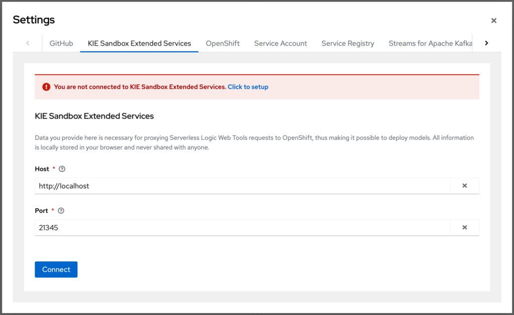
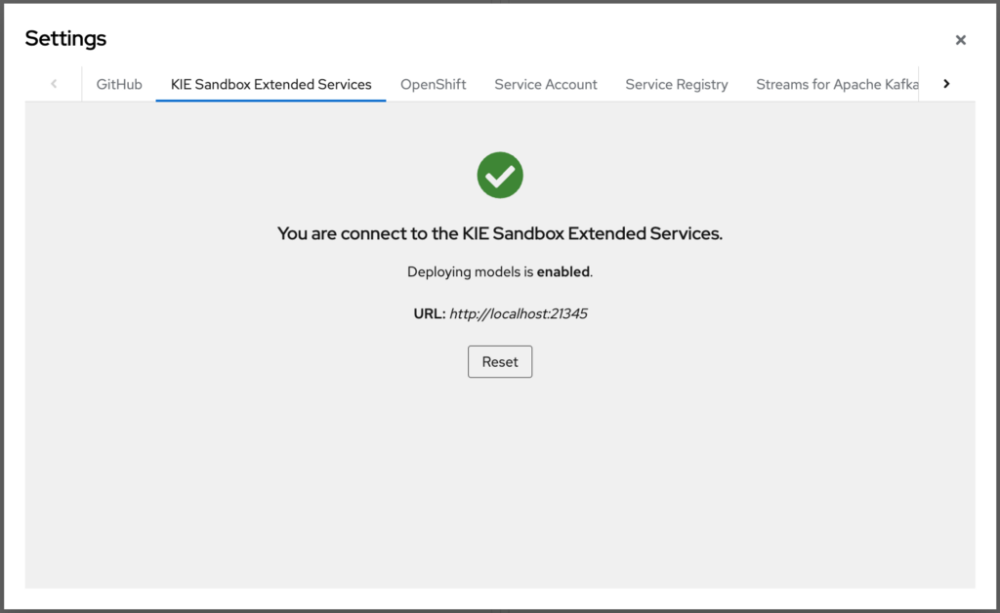
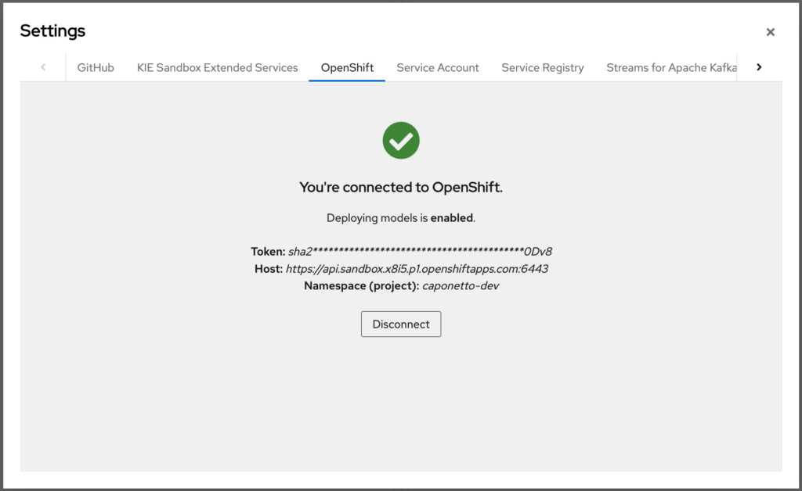
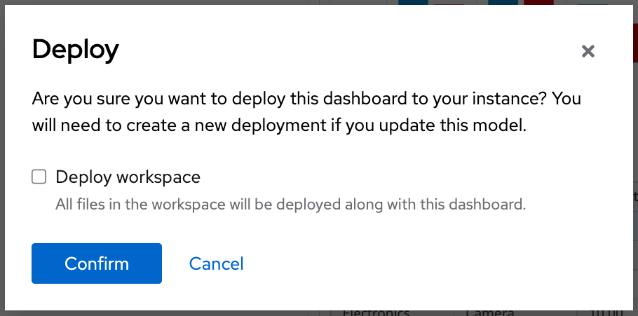

Deploy dashboards to OpenShift
Starting from the KIE Tools 0.26.0 release, the Serverless Logic Web Tools enables users to easily deploy their dashboards to OpenShift. Let’s check out how to set up and use this new feature in this post!

Introduction
Dashbuilder makes it easy for users to create rich dashboards to accommodate their data in meaningful visualizations.
Just like for serverless workflow files, the capability to deploy dashboards to OpenShift has also been added to Serverless Logic Web Tools. It allows users not only to design their dashboards but also to make them available to be shared with others through their OpenShift instance.
The deploy button will be available on the toolbar once a dashboard is open in the editor. Users can either deploy only the dashboard they are currently visualizing or the entire workspace, which may have more dashboards and related data files to be deployed.
Behind the scenes, the files are placed along with a pre-built container image that includes a web application and the Dashbuilder viewer. On the OpenShift side, all necessary resources are created on top of Knative Serving and a builder is triggered to prepare the deployment.
The deployment will scale up and be ready to be accessed once the building process is completed. After one minute of inactivity, the deployment will scale down to zero pods. In case of the deployment is accessed again, it will automatically scale up. This is Knative making sure you save resources of your OpenShift instance.
Set up connections
There are two mandatory configurations that must be done in order to use the deploy operation: (1) run the KIE Sandbox Extended Services; (2) set up the OpenShift instance information.
KIE Sandbox Extended Services
It is mandatory to run the KIE Sandbox Extended Services since it bridges the requests between the Serverless Logic Web Tools and OpenShift.
If the KIE Sandbox Extended Services is not running, go to Serverless Logic Web Tools and click on the Settings button ️located in the top right corner of the page (⚙).
Access the KIE Sandbox Extended Services tab and click on "Click to setup". Then follow the instructions for your Operating system to get the KIE Sandbox Extended Services up and running.


OpenShift instance information
If the OpenShift instance information is not configured yet, go to Serverless Logic Web Tools and click on the Settings button ️located in the top right corner of the page (⚙).
Access the OpenShift tab and fill in the fields with your OpenShift instance information (namespace/project, host, and token).
Note: The personal access token from OpenShift expires every 24 hours.
Note: You can use the Developer Sandbox for Red Hat OpenShift, which gives you 30 days of free access to a shared OpenShift and Kubernetes cluster. You will only need your phone to confirm the activation of your instance.

Deploy the dashboard
Go to Serverless Logic Web Tools and open a dashboard. The Products Dashboard sample will be used as an example for this post.
Once the dashboard is ready to be deployed, click on "Try on OpenShift" located in the toolbar and "Deploy". A popup will be open for you to confirm this operation.

If you simply confirm, only the dashboard you are currently visualizing will be deployed. If you want to deploy the entire workspace, check the "Deploy workspace" box. After the confirmation, all resources will be created in your OpenShift instance and a builder will be started.
You can follow the progress of the deployment operation either on Serverless Logic Web Tools or in your OpenShift instance. Once the building process is completed, the deployment will be scaled up and ready to be shared.
Now, let’s take a look at this feature in action.
And that’s all for today. Thanks for reading! 😃